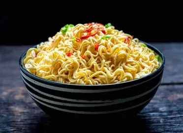

Description
Indomie is a popular instant noodle brand loved across many countries, especially in Nigeria and other parts of Africa and Asia. It's quick and easy to prepare, making it a go-to meal for students, busy workers, and families alike.
The noodles are pre-cooked and come with seasoning sachets that include a spice mix, oil, and sometimes dried vegetables or chili powder. While Indomie can be eaten plain, many people enjoy customizing it with extras like fried eggs, vegetables, sausages, or chicken to make it more filling and flavorful.
Indomie is more than just a snack — it has become a cultural favorite and comfort food for millions. Whether boiled, stir-fried, or souped up with local ingredients, it's tasty, affordable, and satisfying.
Ingredients
- 1 pack of Indomie noodles (any flavor)
- 1 piece of chicken (boiled or fried)
- 1/2 cup of chopped carrots
- 1/2 cup of chopped green beans
- 1/4 cup of sweet corn (optional)
- 1/4 cup of chopped green pepper
- 1/4 chopped onion
- 1 tablespoon of vegetable oil
- 1 cup of water
- Salt and seasoning to taste (if needed)
Steps
- Boil or fry the chicken until it is fully cooked, then set it aside.
- In a small pot or pan, heat 1 tablespoon of vegetable oil.
- Add the chopped onions, carrots, green beans, green pepper, and sweet corn (if using). Stir-fry for 2–3 minutes.
- Pour in 1 cup of water and bring it to a boil.
- Add the pack of Indomie noodles and the seasoning that came with it.
- Let the noodles cook for about 2–3 minutes until soft, stirring occasionally.
- Add the cooked chicken to the pot and stir everything together.
- Taste and adjust salt or seasoning if needed.
- Cook for another 1–2 minutes to let the flavors mix well.
- Serve hot and enjoy!